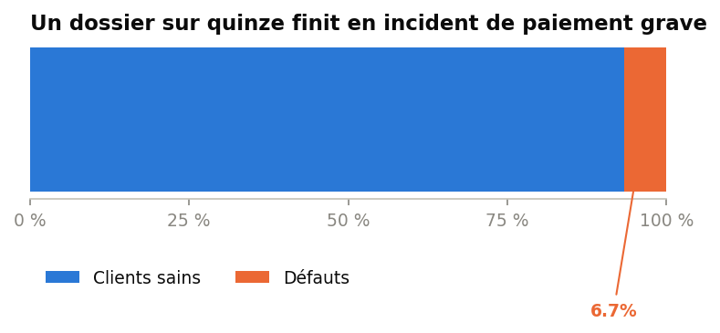
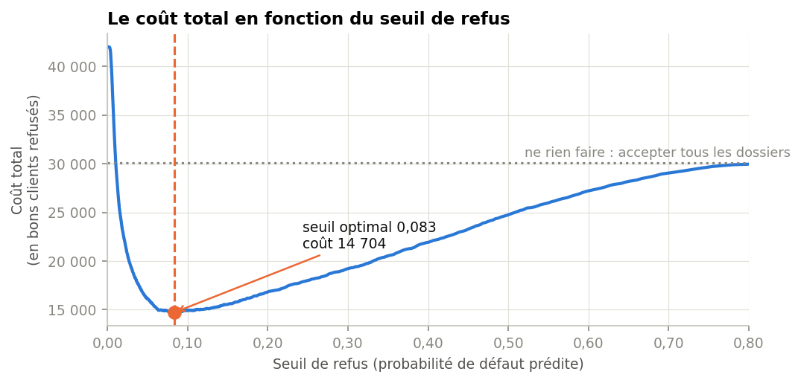
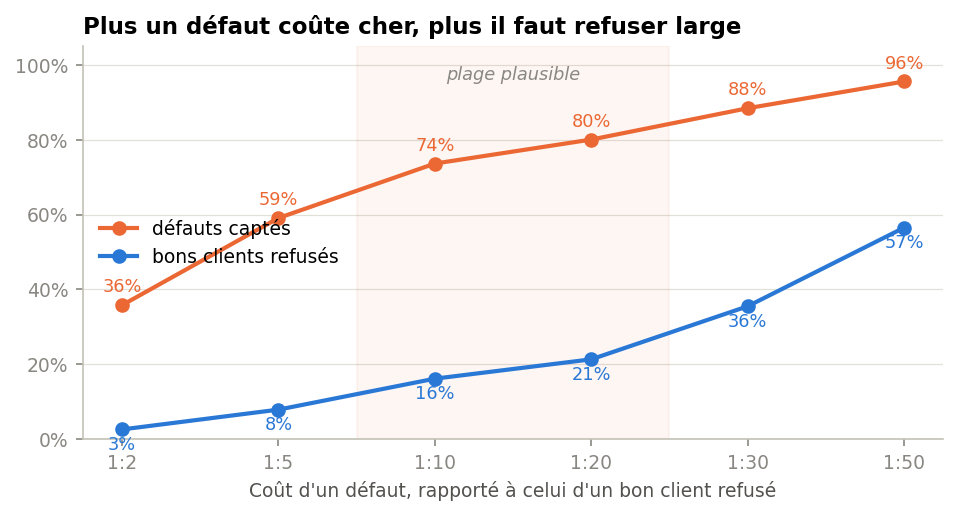

Direction des risques — septembre 2026
Un outil d'arbitrage pour l'octroi de crédit : il classe les dossiers par risque, vous gardez la main sur la décision.
01 — Le problème
Sur les 45 000 dossiers de contrôle, 3 008 ont connu un impayé sérieux dans les deux ans. Au moment de l'octroi, rien ne les distinguait des autres.
Toute la question est de savoir lesquels, avant de prêter.

02 — Ce que fait l'outil
C'est la distinction qui compte : l'outil ne remplace pas une décision, il la documente. Aucun refus n'est automatique.
Dix informations déjà présentes dans vos systèmes : encours, incidents passés, revenus, ancienneté.
Une probabilité de défaut, de 0 à 100 %, qui permet de ranger les dossiers du plus sûr au plus risqué.
Vous fixez à partir de quel score un dossier remonte pour examen. Ce curseur vous appartient.
03 — Est-ce fiable ?
avec l'outil, parmi les dossiers qu'il signale au seuil équilibré
sans l'outil, si l'on examinait des dossiers pris au hasard
À effort d'examen égal, l'outil concentre près de quatre fois plus de vrais risques dans la pile à regarder.
04 — Le curseur
Refuser peu laisse passer des défauts. Refuser large écarte des bons clients. Entre les deux, il existe une zone où le coût total est le plus bas — et elle est large.
La courbe descend vite, puis reste plate sur une longue portion : c'est ce plateau qui rend l'arbitrage confortable.

05 — Trois positions possibles
| Posture | Dossiers refusés | Défauts évités | Bons clients écartés | Justesse des refus |
|---|---|---|---|---|
| Prudente | 5 085 | 1 778 (59 %) | 3 307 | 35 % |
| Équilibréerecommandée | 9 000 | 2 216 (74 %) | 6 784 | 25 % |
| Stricte | 11 363 | 2 409 (80 %) | 8 954 | 21 % |
Plus on refuse large, plus on évite de défauts — mais la justesse des refus se dégrade, car on descend dans des dossiers de moins en moins risqués.
06 — Ce que cela représente
En valorisant un défaut à 10 000 € de capital perdu et un bon client écarté à 1 000 € de marge manquée, le coût passe de 30,1 M€ à 14,7 M€.
Ces montants illustrent un ordre de grandeur sur 45 000 dossiers ; ils se recalculent avec vos propres paramètres.
07 — Pourquoi c'est confortable
c'est tout l'écart de coût entre la posture prudente et la posture stricte
alors que le nombre de dossiers refusés, lui, plus que double
Autrement dit, le choix du curseur est d'abord une décision commerciale — combien de clients acceptez-vous d'écarter ? — et non un pari financier. Vous pouvez ajuster votre politique sans craindre de dégrader sensiblement le résultat économique.
08 — La seule question qui reste
C'est le seul paramètre que l'outil ne peut pas déduire des données. Nous avons retenu un rapport de 1 à 10, usuel en crédit à la consommation.
Le graphique montre ce que d'autres hypothèses impliqueraient. Plus un défaut coûte cher, plus il devient rationnel de refuser large.

09 — Ce que l'outil regarde
La part des lignes de crédit déjà consommée. C'est le signal le plus fort : le risque passe de 3 % à 23 % entre les emprunteurs les moins et les plus exposés.
Un retard déjà survenu pèse lourd. Peu de dossiers sont concernés, mais leur risque est plusieurs fois supérieur à la moyenne.
Le risque décroît régulièrement avec l'âge, de 11 % chez les plus jeunes à 2 % chez les plus âgés.
Chaque décision est décomposable dossier par dossier : un refus peut être justifié au client comme au régulateur.
10 — Prochaines étapes
Mesurer ce que coûte réellement un défaut chez nous. C'est la décision structurante, et elle vous revient.
Faire tourner l'outil trois mois en parallèle des décisions actuelles, sans qu'il n'en influence aucune.
Vérifier dans la durée la stabilité des scores et l'équité des décisions entre catégories d'emprunteurs.